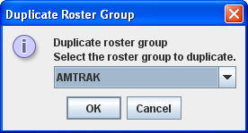
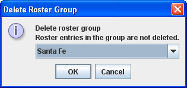
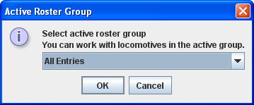

DecoderPro3® Main Window
Settings Menu - Roster Groups
The Roster Groups function allows you to take your entire roster and categorize it. At home you might want to break it down by diesel vs. steam, or by railroad. At a club it would be handy to have categories by member name in addition to any other category you might think of. A roster entry can be associated with more than one group. Again in a club environment, a roster entry could be associated with the Steam, Union Pacific and John Smith groups all at the same time. There is always one group present and it is called Global. All the roster entries are in the Global Group.
Hide/Show Roster Groups
The Hide/Show Roster Groups control is used to toggle the Roster Groups Display Panel on/off in the area highlighted in pink. This must first be activated by clicking on the Settings tab and then clicking on Hide/Show Roster Groups. If the Roster Groups panel does not display when you click on the setting, try to grab the frame on the left side of the area and drag it open (make sure the Hide/Show is in the correct state.)
The panel width may be sized by dragging the frame as indicated by the red arrows. The small arrowheads will allow you to close the panel or open the panel
The Roster Groups will be listed in the Roster Group panel as we create them. The + button will create a new Roster Group and the - button will delete the selected Roster Group.

-
Rename Roster Group
Opens the Rename Roster Group dialog box.

Select Group to rename
if you do not to complete the action
Opens the Rename Roster Group AMTRAK dialog box

Enter the new name in the text box.
if you do not want to complete the action
completes the renaming of the roster group
-
Duplicate Roster Group
Opens the Duplicate Roster group ____ dialog box.
Use Create Roster Group to define any other groups you wish. From the Settings menu Create Roster Group opens the New Roster Group dialog. This same New Roster Group dialog may be opened using the + button above.
Roster Groups Pane
+ button Creates a New Roster Group
- button Deletes a Roster Group that is selected.
Handles on the panel frame will allow you to size the panel.
Type the name of your new roster group in the Create new roster Group
if you do not want to create a new roster Group
creates a new roster group
The OK button will Add the Roster Group to the list in the panel and to the drop-down list on Main window toolbar.
You can now add locomotives to the Groups either by dragging from the locomotive roster list or using the Table Associate, discussed later.


 Select Group to Duplicate
if you do not want to complete the action
Opens the Duplicate Roster Group AMTRAK dialog box
Enter the name for the new roster group in text box.
if you do not want to complete the action
duplicates the roster group with the new name.
Delete Roster Group
Opens the Delete roster group entry. This does not delete individual roster entries.
 Select the Group Roster that you want to delete
if you do not want to delete a roster Group
Deletes the selected roster group as active
You may also delete roster groups by selecting group in the Roster Group panel then pressing the - button.
Set Active Roster Group

Opens the Active Roster group dialog. Once the associations have been made, then you can select the Active Roster Group.
 The Global Roster Group all rosters entries is the current active group. You may select one of the Roster Groups to be active
if you do not want to set an active roster Group
Sets the selected roster group as active
A group may also be set Active by selection in the Roster Group pane.
Roster Group Table Association
Once the groups are named, then you “associate” the roster entries with their group. This can be done by using the Table Association selection. At the top of the table you select the group you wish the roster entries to be associated with, then the roster entries that you want to associate with that group.
Select Roster Group: the roster group that you want to add entries to.
The table shows all the engines in your roster.
In the right column, Include... select the entries that you wish to add to the Roster Group, click individually to select a single item, hold the shift key down to select a range of items, hold the CNTRL key down to randomly select items. Close the Table and the entries will be added to the group.

Once the associations have been made, then you can select the Active Roster Group. Once this is done then the Print and Print Summary actions will show only the roster entries associated with that group. As an example you could select the Group Santa Fe and only the roster entries in this Roster Group will be printed. The printout does not currently show the active group in the header. The active group will also influence any drop down box which has a list of entries in it, such as Throttle, edit entry, copy, etc. Also, when adding a new roster entry it will automatically be associated with the currently active group, so it is good practice when finishing working with a group to return the active group to Global.
Restoring Roster to include all Engines
To return your roster to show all engines, Select Roster Group to All Entries, or Global. Then you may be certain that you are working with all engines in your roster.
Disassociation of Roster Entry to Group
To diassociate a roster entry to a Roster Group, open Roster Group Table and uncheck roster selection and save new Group by closing the Roster Group Table.